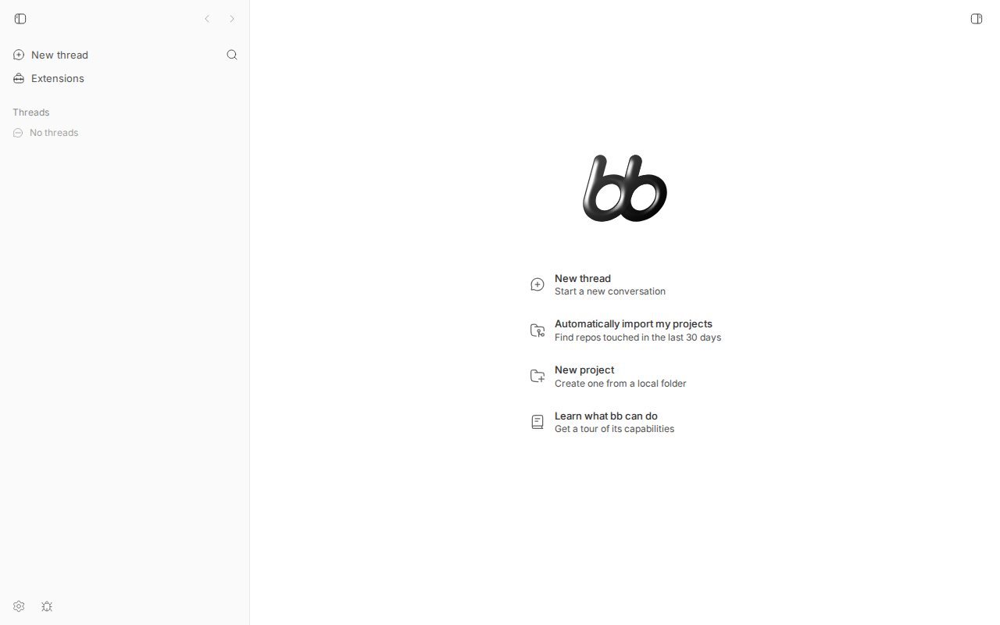

#1334 · Co-located execution workload can starve the bb server and leave threads spinning
TL;DR
When bb is deployed the documented way on Linux (npx bb-app or the packaged bb-app under a systemd unit), the launcher forks the server (control plane: HTTP API, web UI, SQLite) and the primary host daemon (execution plane: provider processes, agent shell commands, their descendants) as ordinary child processes. Linux puts every descendant into the same cgroup as its parent, so under a unit with MemoryHigh= the server, the daemon, every provider CLI and every process an agent starts share one memory budget. When the execution side pushes the cgroup over memory.high, the kernel throttles every task in that cgroup that allocates memory (mem_cgroup_handle_over_high, up to 2 s per allocation batch) — including the server that would have to report or stop the runaway work.
I reproduced this end to end on the base commit with the real bb-app launcher inside a systemd-run --scope with MemoryHigh=800M: a single 1 GiB memory hog started in the same cgroup made curl --max-time 5 /health time out repeatedly, put the server process into uninterruptible sleep in __mem_cgroup_handle_over_high, produced 72 Event loop stalled lines in the server log and 15 in the daemon log plus 2 heartbeat timer delayed warnings (one 34.9 s stall; heartbeat gap 35.7 s > 30 s lease), a command_timeout on a provider status request, and left the web UI on its loading skeleton for tens of seconds. Kernel memory.events showed oom_kill 0 throughout, matching the reporter's "control-plane dead zone, not an OOM" observation.
Two product gaps make the symptom "spin indefinitely" rather than "fail with a reason": (1) there is no documented or supported way to run the server and the primary daemon in separate resource domains on one machine — the install script, bb-app --help and the docs only offer the combined launcher. (Correction after verification: a split is technically possible today with the packaged-but-undocumented bb-server bin plus bb-app host-daemon join --server-url http://127.0.0.1:<port>; I verified it works, see Root cause §1. It is a workaround, not a supported mode.), and (2) since #421 the server decides host liveness solely from the presence of a registered daemon WebSocket in memory and never consults the heartbeat lease, so a throttled daemon whose socket is still open is reported connected and its threads stay active with no deadline. Nothing in the server, daemon, or UI observes host pressure.
Claims vs findings
| Claim | Status | Evidence |
|---|---|---|
Packaged bb-app starts server and primary host daemon as managed child processes, so under systemd they share one service cgroup with provider runtimes and agent-launched descendants | Verified | packages/bb-app/src/launcher.ts#L2264-L2270 (spawn without any cgroup/scope isolation), packages/bb-app/src/launcher.ts#L2898-L2966. Repro baseline listing shows launcher, server, daemon and its plugin workers all in run-p….scope; the memhog spawned by the script landed in the same cgroup. |
Cgroup above MemoryHigh puts server (and others) into uninterruptible sleep in mem_cgroup_handle_over_high | Verified | wchan-sample.out: server(1509173) state=D wchan=__mem_cgroup_handle_over_high in 22 of 60 samples while the hog ran; the hog itself sat there permanently. |
curl --max-time 5 http://127.0.0.1:38886/health and the daemon port time out | Verified | external-probe.run2.out: 5 timeouts in 13 probes of /health; run3: /health, /api/v1/threads and daemon / all hit the 5 s timeout together at 05:33:07–05:33:36. Recovered to <1 ms within seconds of killing the hog. |
| Journal shows repeated server and host-daemon event-loop stalls, multi-second delays; provider requests time out | Verified | Server log: 72 × Event loop stalled (maxDelayMs 2046–10242, one request in flight 45 s); daemon log: 15 stalls incl. maxDelayMs 34863 and heartbeat timer delayed gapMs 35688; Failed to resolve known ACP agent status … command_timeout … 504. See Appendix. |
Not an OOM kill: memory.events oom 0 oom_kill 0 (comment 1) | Verified | All memory.events samples in the run: oom 0 oom_kill 0, high counter climbing to 109,119. Same mechanism (reclaim throttling) as the reporter's 2,677,099 high events. |
| App shows a spinner without explaining that the host is resource-exhausted | Verified (delayed load in my scaled-down repro) | Screenshot A: loading skeleton 4 s after DOMContentLoaded (navigation itself took 6.6 s). At my pressure level the page finished loading after ~30 s (Screenshot B); the reporter's cgroup was under far heavier pressure (199 s query). Nothing in the UI names the cause in either state. |
| Host stays "connected"/threads keep spinning while daemon is frozen (implicit in "threads spinning") | Verified in code + unit test | apps/server/src/services/threads/thread-runtime-display.ts#L143-L153, apps/server/src/services/lib/entity-lookup.ts#L104-L113: liveness = socket registered in hub, lease ignored (by design since #421). Repro test below passes on main; /api/v1/hosts returned "status":"connected" during the freeze. |
| No server-only mode / no way to isolate the primary daemon | Partially refuted | No documented/supported mode: packages/bb-app/src/launcher.ts#L1397-L1446 commands are start/stop/host-daemon/client/config/env/help; the help text (#L2868-L2884), docs/ and the installer never mention a server-only mode. But a split works today: the packaged bb-server bin (#L2626-L2680, package.json bin, present since the original npx packaging commit 0ba37b81a, mentioned nowhere in docs) starts only the server, and bb-app host-daemon join --server-url http://127.0.0.1:<port> enrolls a daemon against it (loopback /internal/hosts/enroll-key is unauthenticated, apps/server/src/server.ts#L388-L392). Verified with split-deploy-check.sh / split-deploy-check-shared.sh: /api/v1/hosts = [] with only bb-server up, then "status":"connected" after the join. Each process is a separate top-level process, so an operator can put them in separate systemd units. Caveats: with separate data dirs the server has no <dataDir>/host-id and falls back to "the single connected host" for primary-host resolution (primary-host.ts#L70-L76); sharing one data dir avoids that (primaryHostId flips from null to the joined host). Neither variant is documented, tested, or produced by the installer. |
| Browser daemon "reparented to user systemd manager but remained in bb.service's cgroup" | Unverified but consistent | Standard Linux semantics: reparenting on parent exit does not change cgroup membership; only an explicit cgroup.procs write or systemd-run does. My memhog stayed in the scope after its parent subshell would have exited. |
| Comment 2: 17 Codex app-servers ≈ 1.26 GiB RSS with 4 active threads on 0.37.0 | Plausible, not reproduced | One app-server per bb thread (plugins/provider-codex/src/bridge/bridge.ts#L1640-L1660); the daemon idle-reaps provider sessions only after 30 min (apps/host-daemon/src/app.ts#L66-L67). Idle-but-not-yet-reaped sessions would explain the count; not measured here. |
Comment 2: on 0.37.0 the server was OOM-killed at MemoryMax=4G | Unverified | Consistent with the shared-cgroup design (kernel picks the largest RSS task in the cgroup; a fat server heap, see #1748, is a likely victim). Not reproduced (my run set MemoryMax well above use to isolate the throttling behaviour). |
Environment
- bb: worktree at
16ceb3a540f81c1189efaffb27a39b1d9443abf5(main, 2026-08-18), built withpnpm exec turbo run build; the packaged launcherpackages/bb-app/dist/bb-app.jswas run directly (same code path asnpx bb-app). - OS: Ubuntu 26.04 LTS, kernel 7.0.0-29-generic, cgroup v2 (
cgroup2fs), systemd user session; 16 vCPU / 58 GiB RAM host (limits imposed withsystemd-run --user --scope). - Node v24.18.0.
- Isolated instance: data dir
/tmp/bb-1334-scope-data, serverhttp://127.0.0.1:48861, host daemon port 48862 (host idhost_zgj5r8yyt9). No providers were exercised; no real turns run. - Cgroup limits used:
MemoryHigh=800M MemoryMax=2200M MemorySwapMax=64M(bb baseline in the scope was ~545 MiB; hog target 1024 MiB). - Split-deployment cross-check (revision):
bb-serveronhttp://127.0.0.1:48881, daemon port 48882, data dirs/tmp/bb-1334-split/{server-data,daemon-data}and/tmp/bb-1334-split-shared/shared-data; no cgroup limits, plain shell.
Minimal reproduction
Everything below is under 1334/repro/. Requires Linux with cgroup v2 and a systemd user session (systemd-run --user works). No provider account needed.
- Build bb:
pnpm install --frozen-lockfile && pnpm exec turbo run build. - Start the packaged launcher inside one memory-limited scope and, once healthy, start a memory hog in the same cgroup:
systemd-run --user --scope --quiet -p MemoryHigh=800M -p MemoryMax=2200M -p MemorySwapMax=64M \ /tmp/bb-reports/issues/1334/repro/run-in-scope-v2.sh <worktree> /tmp/bb-1334-scope-data 48861 48862 1024 200 \ | tee run-in-scope-v2.out
The script startsnode packages/bb-app/dist/bb-app.js --data-dir … --server-port 48861 --host-daemon-port 48862, waits for/health, lists the cgroup members, then runsmemhog.mjs 1024(allocates and keeps touching 1 GiB) in the same cgroup, samplingmemory.*and per-processwchan. - From a second shell (outside the cgroup — this is what a browser tab or the CLI is), probe the control plane while generating light API load:
/tmp/bb-reports/issues/1334/repro/external-probe.sh 48861 48862 90 6 | tee external-probe.run2.out
When to run it: the hog is itself throttled (it reaches ~350 MiB in ~20 s but ~450 MiB only after ~4–5 min and ~512 MiB after ~13 min, seememhog.out), so pressure builds slowly. Probing right after the hog starts shows only 0.3–3 s latencies. The 5 sTIMEOUTlines appear once the hog is well pastmemory.high— in my run ~11 min after hog start (05:19:27 → first timeouts 05:30:23), in the verifier's run ~5 min. Wait until the memhog log shows ≥ ~450 MiB resident (ormemory.pressure full avg60in the scope output is > 50) and then run the probe for 90–240 s. Budget ~15–20 min for the whole scope run. Use a fresh data dir and free ports (ss -ltn | grep 4886);/tmp/bb-1334-scope-dataabove is the dir I used and still contains my DB. - Optionally sample kernel wait channels:
wchan-sample.sh <serverPid> <daemonPid> <hogPid> 60. - Kill the hog (
kill <hogPid>) and re-probe: everything is back to sub-millisecond within seconds.
Expected
/health keeps answering in ~1 ms (as at baseline), or the affected turn/host is failed or paused with an actionable "execution host resource exhausted" state.
Actual — control plane probes from outside the cgroup (external-probe.run2.out)
05:30:19 server /health -> 200 in 0.001366s | server /api/v1/threads -> 200 in 2.059691s | daemon / -> 404 in 0.000779s 05:30:23 server /health -> 000 in 5.002463s | server /health -> TIMEOUT(5s) | server /api/v1/threads -> 000 in 5.002989s | server /api/v1/threads -> TIMEOUT(5s) | daemon / -> 404 in 0.000833s 05:30:35 server /health -> 000 in 5.002096s | server /health -> TIMEOUT(5s) | server /api/v1/threads -> 000 in 5.002239s | server /api/v1/threads -> TIMEOUT(5s) | daemon / -> 404 in 0.001067s 05:30:47 server /health -> 000 in 5.002784s | server /health -> TIMEOUT(5s) | server /api/v1/threads -> 000 in 5.002398s | server /api/v1/threads -> TIMEOUT(5s) | daemon / -> 404 in 0.000962s 05:30:59 server /health -> 200 in 2.918437s | server /api/v1/threads -> 200 in 0.002262s | daemon / -> 404 in 0.000906s 05:31:04 server /health -> 200 in 2.060022s | server /api/v1/threads -> 000 in 5.002737s | server /api/v1/threads -> TIMEOUT(5s) | daemon / -> 404 in 0.001216s 05:31:13 server /health -> 000 in 5.002017s | server /health -> TIMEOUT(5s) | server /api/v1/threads -> 200 in 0.260073s | daemon / -> 404 in 0.110452s 05:31:21 server /health -> 200 in 1.965160s | server /api/v1/threads -> 200 in 0.003724s | daemon / -> 404 in 0.000958s 05:31:25 server /health -> 200 in 2.062966s | server /api/v1/threads -> 200 in 0.002282s | daemon / -> 404 in 0.000963s 05:31:29 server /health -> 200 in 2.071275s | server /api/v1/threads -> 200 in 0.001878s | daemon / -> 404 in 0.001033s 05:31:33 server /health -> 200 in 2.067763s | server /api/v1/threads -> 200 in 4.091335s | daemon / -> 404 in 0.000936s 05:31:41 server /health -> 200 in 0.032953s | server /api/v1/threads -> 200 in 2.034843s | daemon / -> 404 in 0.000793s 05:31:45 server /health -> 200 in 0.029337s | server /api/v1/threads -> 200 in 2.043917s | daemon / -> 404 in 0.000745s
Baseline before the hog (from run-in-scope-v2.out): server /health -> 200 in 0.001352s, /api/v1/threads -> 200 in 0.002189s, daemon / -> 404 in 0.002121s. During the third probe run the daemon port timed out too:
05:32:27 server /health -> 200 in 0.000460s | server /api/v1/threads -> 200 in 2.054506s | daemon / -> 404 in 0.000808s 05:32:31 server /health -> 200 in 0.030440s | server /api/v1/threads -> 200 in 2.040971s | daemon / -> 404 in 0.001010s 05:32:36 server /health -> 200 in 0.034359s | server /api/v1/threads -> 200 in 0.001146s | daemon / -> 404 in 0.001073s 05:32:38 server /health -> 200 in 0.020831s | server /api/v1/threads -> 200 in 4.086693s | daemon / -> 404 in 0.001464s 05:32:44 server /health -> 200 in 4.121698s | server /api/v1/threads -> 000 in 5.002313s | server /api/v1/threads -> TIMEOUT(5s) | daemon / -> 404 in 0.000861s 05:32:55 server /health -> 000 in 5.002106s | server /health -> TIMEOUT(5s) | server /api/v1/threads -> 000 in 5.002148s | server /api/v1/threads -> TIMEOUT(5s) | daemon / -> 404 in 0.001317s 05:33:07 server /health -> 200 in 3.474826s | server /api/v1/threads -> 000 in 5.006310s | server /api/v1/threads -> TIMEOUT(5s) | daemon / -> 000 in 5.002705s daemon / -> TIMEOUT(5s) 05:33:22 server /health -> 000 in 5.002448s | server /health -> TIMEOUT(5s) | server /api/v1/threads -> 200 in 1.399491s | daemon / -> 000 in 5.002223s daemon / -> TIMEOUT(5s) 05:33:36 server /health -> 000 in 5.002383s | server /health -> TIMEOUT(5s) | server /api/v1/threads -> 200 in 4.344347s | daemon / -> 000 in 5.002765s daemon / -> TIMEOUT(5s)
Actual — where the server is sleeping (wchan-sample.out, sampled every 250 ms)
05:29:07.478 server(1509173) state=S wchan=ep_poll | daemon(1509238) state=S wchan=ep_poll | hog(1513061) state=D wchan=__mem_cgroup_handle_over_high 05:29:07.751 server(1509173) state=S wchan=ep_poll | daemon(1509238) state=S wchan=ep_poll | hog(1513061) state=D wchan=__mem_cgroup_handle_over_high 05:29:08.027 server(1509173) state=S wchan=ep_poll | daemon(1509238) state=S wchan=ep_poll | hog(1513061) state=D wchan=__mem_cgroup_handle_over_high 05:29:08.302 server(1509173) state=S wchan=ep_poll | daemon(1509238) state=S wchan=ep_poll | hog(1513061) state=D wchan=__mem_cgroup_handle_over_high 05:29:08.577 server(1509173) state=S wchan=ep_poll | daemon(1509238) state=S wchan=ep_poll | hog(1513061) state=D wchan=__mem_cgroup_handle_over_high 05:29:08.851 server(1509173) state=S wchan=ep_poll | daemon(1509238) state=S wchan=ep_poll | hog(1513061) state=D wchan=__mem_cgroup_handle_over_high 05:29:09.124 server(1509173) state=S wchan=ep_poll | daemon(1509238) state=S wchan=ep_poll | hog(1513061) state=D wchan=__mem_cgroup_handle_over_high 05:29:09.398 server(1509173) state=S wchan=ep_poll | daemon(1509238) state=S wchan=ep_poll | hog(1513061) state=D wchan=__mem_cgroup_handle_over_high 05:29:09.670 server(1509173) state=S wchan=ep_poll | daemon(1509238) state=S wchan=ep_poll | hog(1513061) state=D wchan=__mem_cgroup_handle_over_high 05:29:09.943 server(1509173) state=S wchan=ep_poll | daemon(1509238) state=S wchan=ep_poll | hog(1513061) state=D wchan=__mem_cgroup_handle_over_high 05:29:10.219 server(1509173) state=S wchan=ep_poll | daemon(1509238) state=S wchan=ep_poll | hog(1513061) state=D wchan=__mem_cgroup_handle_over_high 05:29:10.496 server(1509173) state=S wchan=ep_poll | daemon(1509238) state=S wchan=ep_poll | hog(1513061) state=D wchan=__mem_cgroup_handle_over_high ... 05:29:22.865 server(1509173) state=S wchan=ep_poll | daemon(1509238) state=S wchan=ep_poll | hog(1513061) state=D wchan=__mem_cgroup_handle_over_high 05:29:23.138 server(1509173) state=S wchan=ep_poll | daemon(1509238) state=S wchan=ep_poll | hog(1513061) state=D wchan=__mem_cgroup_handle_over_high 05:29:23.412 server(1509173) state=S wchan=ep_poll | daemon(1509238) state=S wchan=ep_poll | hog(1513061) state=D wchan=__mem_cgroup_handle_over_high 05:29:23.687 server(1509173) state=S wchan=ep_poll | daemon(1509238) state=S wchan=ep_poll | hog(1513061) state=D wchan=__mem_cgroup_handle_over_high
Actual — cgroup view and cgroup members (run-in-scope-v2.out, first rounds)
cgroup: /sys/fs/cgroup/user.slice/user-1000.slice/user@1000.service/app.slice/run-p1509151-i1521275.scope memory.high=838860800 memory.max=2306867200 memory.swap.max=67108864 launcher pid 1509159 server healthy after 2s --- baseline processes in the scope 1509151 script bash /tmp/bb-reports/issues/1334/repro/run-in-scope-v2.sh /home/USER/projects/bb/.claude/worktrees/wf_debcf606-e4a-18 /tmp/bb-1334-scope-d 1509159 launcher node /home/USER/projects/bb/.claude/worktrees/wf_debcf606-e4a-18/packages/bb-app/dist/bb-app.js --data-dir /tmp/bb-1334-scope-data --serve 1509173 server /home/USER/.nvm/versions/node/v24.18.0/bin/node /home/USER/projects/bb/.claude/worktrees/wf_debcf606-e4a-18/packages/bb-app/server/dist/ 1509238 daemon /home/USER/.nvm/versions/node/v24.18.0/bin/node /home/USER/projects/bb/.claude/worktrees/wf_debcf606-e4a-18/packages/bb-app/host-daemon/ 1509416 daemon /home/USER/.nvm/versions/node/v24.18.0/bin/node /home/USER/projects/bb/.claude/worktrees/wf_debcf606-e4a-18/packages/bb-app/host-daemon/ 1509430 daemon /home/USER/.nvm/versions/node/v24.18.0/bin/node /home/USER/projects/bb/.claude/worktrees/wf_debcf606-e4a-18/packages/bb-app/host-daemon/ 1513002 other --- baseline memory.current=572182528 events: low 0 high 0 max 0 oom 0 oom_kill 0 oom_group_kill 0 sock_throttled 0 --- baseline latency server /health -> 200 in 0.001352s server /health -> 200 in 0.000803s server /health -> 200 in 0.000921s server /api/v1/threads -> 200 in 0.002189s daemon / -> 404 in 0.002121s --- starting 3 light API load loops (what an open browser tab / CLI does) --- starting memhog (1024 MiB, hold 200s) inside the same cgroup at 05:19:27 === 05:19:40 t+10s memory.current=894570496 high=838860800 swap.current=66985984 memory.events: low 0 high 15631 max 0 oom 0 oom_kill 0 oom_group_kill 0 sock_throttled 72 memory.pressure: some avg10=39.72 avg60=11.07 avg300=2.51 total=7889790 full avg10=39.62 avg60=11.04 avg300=2.50 total=7854699 server /health -> 200 in 0.002564s server /api/v1/threads -> 200 in 0.001976s daemon / -> 404 in 0.001620s pid 1509151 role=script state=S wchan=anon_pipe_read pid 1509159 role=launcher state=S wchan=ep_poll pid 1509173 role=server state=D wchan=ep_poll pid 1509238 role=daemon state=S wchan=ep_poll pid 1509416 role=daemon state=S wchan=ep_poll pid 1509430 role=daemon state=S wchan=ep_poll pid 1513054 role=script state=S wchan=do_wait pid 1513055 role=script state=S wchan=do_wait pid 1513057 role=script state=S wchan=do_wait pid 1513061 role=MEMHOG state=D wchan=__mem_cgroup_handle_over_high === 05:21:19 t+20s memory.current=920174592 high=838860800 swap.current=66883584 memory.events: low 0 high 46073 max 0 oom 0 oom_kill 0 oom_group_kill 0 sock_throttled 90 memory.pressure: some avg10=67.98 avg60=56.92 avg300=22.13 total=80680309 full avg10=67.83 avg60=56.86 avg300=22.10 total=80554369 server /health -> 200 in 0.000906s server /api/v1/threads -> 200 in 0.002889s daemon / -> 404 in 0.001216s pid 1509151 role=script state=S wchan=anon_pipe_read pid 1509159 role=launcher state=S wchan=ep_poll pid 1509173 role=server state=D wchan=ep_poll pid 1509238 role=daemon state=S wchan=ep_poll pid 1509416 role=daemon state=S wchan=ep_poll pid 1509430 role=other state=S wchan=ep_poll pid 1513054 role=script state=S wchan=do_wait pid 1513055 role=script state=S wchan=do_wait pid 1513057 role=script state=S wchan=do_wait pid 1513061 role=MEMHOG state=D wchan=__mem_cgroup_handle_over_high === 05:27:27 t+30s memory.current=976719872 high=838860800 swap.current=66850816
Note the wall-clock gaps between rounds (t+10 s printed at 05:19:40, t+20 s at 05:21:19, t+30 s at 05:27:27): the probing bash script itself, being in the same cgroup, was throttled on every fork(). That is what happens to anything bb spawns (git, provider CLIs, tool commands) inside a pressured cgroup. After the hog was killed:
pid 1513055 role=script state=S wchan=do_wait pid 1513057 role=script state=S wchan=do_wait pid 1736336 role=daemon state=S wchan=ep_poll --- 05:36:08 after hog exit memory.current=703053824 events: low 0 high 109119 max 0 oom 0 oom_kill 0 oom_group_kill 0 sock_throttled 731 server /health -> 200 in 0.000611s daemon / -> 404 in 0.000878s launcher exited
Actual — what the server and daemon logged (launcher.out, excerpt)
[05:33:04] INFO: [server] Event loop stalled {"intervalMs":5000,"maxDelayMs":10242.5,"meanDelayMs":10238.3,"p99DelayMs":10242.5,"resolutionMs":20,"thresholdMs":500,"currentWork":null,"lastWork":"GET /api/v1/threads","lastWorkMs":0.4,"slowestWork":"GET /api/v1/hosts","slowestWorkMs":0.5}
[05:33:06] INFO: [server] Slow DB query {"bindingArgumentCount":3,"durationMs":2045.1,"operation":"get","sql":"update \"host_daemon_sessions\" set \"lease_expires_at\" = ?, \"updated_at\" = ? where \"host_daemon_sessions\".\"id\" = ? returning \"id\", \"host_id\", \"instance_id\", \"host_name\", \"host_type\", \"data_dir\", \"protocol_version\", \"heartbeat_interval_ms\", \"lease_timeout_ms\", \"status\", \"lease_expires_at\", \"closed_at\", \"close_reason\", \"created_at\", \"updated_at\"","thresholdMs":100}
[05:33:10] INFO: [server] Event loop stalled {"intervalMs":5000,"maxDelayMs":2047.9,"meanDelayMs":2046.8,"p99DelayMs":2047.9,"resolutionMs":20,"thresholdMs":500,"currentWork":"GET /api/v1/system/version","lastWork":"GET /api/v1/threads","lastWorkMs":1.1,"slowestWork":"GET /api/v1/system/version","slowestWorkMs":4084.4}
[05:33:17] INFO: [server] Event loop stalled {"intervalMs":5000,"maxDelayMs":2050,"meanDelayMs":2049.4,"p99DelayMs":2050,"resolutionMs":20,"thresholdMs":500,"currentWork":"GET /api/v1/hosts/host_zgj5r8yyt9/provider-clis/status","lastWork":"GET /api/v1/threads","lastWorkMs":0.6,"slowestWork":"GET /api/v1/hosts/host_zgj5r8yyt9/provider-clis/status","slowestWorkMs":6145.4}
[05:33:25] INFO: [server] Event loop stalled {"intervalMs":5000,"maxDelayMs":4095.7,"meanDelayMs":2721.4,"p99DelayMs":4095.7,"resolutionMs":20,"thresholdMs":500,"currentWork":"GET /api/v1/hosts/host_zgj5r8yyt9/provider-clis/status | GET /api/v1/system/execution-options | GET /api/v1/system/onboarding/agents | GET /api/v1/plugins/automations/assets/app.js | GET /api/v1/plugins/connect/assets/app.js | GET /api/v1/plugins/custom-instructions/assets/app.js","lastWork":"GET /api/v1/threads","lastWorkMs":0.8,"slowestWork":"GET /api/v1/hosts/host_zgj5r8yyt9/provider-clis/status","slowestWorkMs":14332.7}
[05:33:31] INFO: [server] Event loop stalled {"intervalMs":5000,"maxDelayMs":2048.9,"meanDelayMs":2048.4,"p99DelayMs":2048.9,"resolutionMs":20,"thresholdMs":500,"currentWork":"GET /api/v1/hosts/host_zgj5r8yyt9/provider-clis/status | GET /api/v1/system/execution-options | GET /api/v1/system/onboarding/agents | GET /api/v1/plugins/automations/assets/app.js | GET /api/v1/plugins/connect/assets/app.js | GET /api/v1/plugins/custom-instructions/assets/app.js","lastWork":"GET /api/v1/threads","lastWorkMs":0.8,"slowestWork":"GET /api/v1/hosts/host_zgj5r8yyt9/provider-clis/status","slowestWorkMs":20478.4}
[05:33:37] INFO: [server] Event loop stalled {"intervalMs":5000,"maxDelayMs":2048.9,"meanDelayMs":1531.1,"p99DelayMs":2048.9,"resolutionMs":20,"thresholdMs":500,"currentWork":"GET /api/v1/hosts/host_zgj5r8yyt9/provider-clis/status | GET /api/v1/system/execution-options | GET /api/v1/system/onboarding/agents | GET /api/v1/plugins/automations/assets/app.js | GET /api/v1/plugins/connect/assets/app.js | GET /api/v1/plugins/custom-instructions/assets/app.js","lastWork":"GET /api/v1/projects","lastWorkMs":0.4,"slowestWork":"GET /api/v1/hosts/host_zgj5r8yyt9/provider-clis/status","slowestWorkMs":26622.4}
[05:33:45] INFO: [server] Event loop stalled {"intervalMs":5000,"maxDelayMs":4097.8,"meanDelayMs":4096.8,"p99DelayMs":4097.8,"resolutionMs":20,"thresholdMs":500,"currentWork":"GET /api/v1/system/execution-options | GET /api/v1/system/onboarding/agents | GET /api/v1/plugins/automations/assets/app.js | GET /api/v1/plugins/connect/assets/app.js | GET /api/v1/plugins/custom-instructions/assets/app.js | GET /api/v1/plugins/inline-vis/assets/app.js","lastWork":"GET /api/v1/providers","lastWorkMs":0.1,"slowestWork":"GET /api/v1/hosts/host_zgj5r8yyt9/provider-clis/status","slowestWorkMs":30719.4}
[05:33:47] WARN: [server] Failed to resolve known ACP agent status {"errorCode":"command_timeout","errorMessage":"Timed out waiting for command result","errorStatus":504,"hostId":"host_zgj5r8yyt9"}
[05:33:53] INFO: [server] Event loop stalled {"intervalMs":5000,"maxDelayMs":4093.6,"meanDelayMs":3071,"p99DelayMs":4093.6,"resolutionMs":20,"thresholdMs":500,"currentWork":"GET /api/v1/system/execution-options | GET /api/v1/plugins/automations/assets/app.js | GET /api/v1/plugins/connect/assets/app.js | GET /api/v1/plugins/custom-instructions/assets/app.js | GET /api/v1/plugins/inline-vis/assets/app.js","lastWork":"GET /api/v1/providers","lastWorkMs":0.2,"slowestWork":"GET /api/v1/system/execution-options","slowestWorkMs":36856.5}
[05:34:02] INFO: [server] Event loop stalled {"intervalMs":5000,"maxDelayMs":4108.3,"meanDelayMs":1551.8,"p99DelayMs":4108.3,"resolutionMs":20,"thresholdMs":500,"currentWork":"GET /api/v1/system/execution-options | GET /api/v1/plugins/automations/assets/app.js | GET /api/v1/plugins/connect/assets/app.js | GET /api/v1/plugins/inline-vis/assets/app.js | GET /api/v1/plugins/keep-awake/assets/app.js | GET /api/v1/plugins/provider-acp/assets/app.js","lastWork":"GET /api/v1/hosts","lastWorkMs":0.7,"slowestWork":"GET /api/v1/system/execution-options","slowestWorkMs":45112.9}
[05:33:45] WARN: [host-daemon] Host daemon event loop stalled {"serverUrl":"http://127.0.0.1:48861","intervalMs":5000,"maxDelayMs":34863.1,"meanDelayMs":830,"p99DelayMs":34863.1,"resolutionMs":20,"thresholdMs":500}
[05:33:45] WARN: [host-daemon] Host daemon heartbeat timer delayed {"serverUrl":"http://127.0.0.1:48861","gapMs":35688,"heartbeatIntervalMs":5000,"leaseTimeoutMs":30000,"sessionId":"hses_5pyrgux2sv","websocketReadyState":1}
[05:34:02] WARN: [host-daemon] Host daemon heartbeat timer delayed {"serverUrl":"http://127.0.0.1:48861","gapMs":16572,"heartbeatIntervalMs":5000,"leaseTimeoutMs":30000,"sessionId":"hses_5pyrgux2sv","websocketReadyState":1}
Totals for the run: 72 Event loop stalled lines in server.log, 20 Slow DB query lines (a one-row update host_daemon_sessions heartbeat took 2045 ms), 17 daemon warnings in host-daemon.log (15 Host daemon event loop stalled + 2 heartbeat timer delayed, only one of which — gapMs 35688 — exceeded the 30 s lease), one provider RPC command_timeout. The maximum per-stall delay clusters at 2048 ms and multiples of it because the kernel caps each over-high penalty at 2 s (MEMCG_MAX_HIGH_DELAY_JIFFIES).
The hog itself was throttled hardest: it reached only 512 MiB in 782 s (memhog.out), so the cgroup only ever exceeded memory.high by ~100–170 MiB. Even that modest, sustained overage was enough for the effects above; the reporter's cgroup was ~300 MiB over for a long time with far more allocating processes.
memhog: resident ~32 MiB after 0.0s memhog: resident ~64 MiB after 0.0s memhog: resident ~96 MiB after 0.0s memhog: resident ~128 MiB after 0.0s memhog: resident ~160 MiB after 0.1s memhog: resident ~192 MiB after 0.1s memhog: resident ~224 MiB after 0.1s memhog: resident ~256 MiB after 0.1s memhog: resident ~288 MiB after 0.2s memhog: resident ~320 MiB after 0.9s memhog: resident ~352 MiB after 17.4s memhog: resident ~384 MiB after 45.4s memhog: resident ~416 MiB after 121.0s memhog: resident ~448 MiB after 267.3s memhog: resident ~480 MiB after 464.3s memhog: resident ~512 MiB after 782.1s
Visual: web UI served by the throttled server
http://127.0.0.1:48861/ in headless Chromium while the hog ran (external load loops active). page.goto took 6.6 s to DOMContentLoaded; 4 s later the sidebar still shows the grey loading skeleton and the main pane is blank. There is no message about the host being under pressure.
Unit-level repro of the liveness gap (passes on main; documents current behaviour)
apps/server/test/hosts/issue-1334/frozen-daemon-liveness.repro.test.ts (copy at 1334/repro/frozen-daemon-liveness.repro.test.ts). Run from apps/server: pnpm exec vitest run test/hosts/issue-1334/ → 2 passed | 1 expected fail. The two passing tests assert what the server does today (host connected, thread active with hostReconnectGraceExpiresAt: null) for a daemon whose lease expired 5 minutes ago but whose socket is still registered; the it.fails case states the desired behaviour.
/**
* Repro for get-bb/bb#1334 (control-plane view of the failure).
*
* A host daemon that is throttled by cgroup memory reclaim (or otherwise
* frozen) keeps its TCP/WebSocket connection open — the kernel still ACKs —
* but stops sending `heartbeat` messages, so `lease_expires_at` goes stale.
*
* Since #421 the server derives host liveness ONLY from the in-memory socket
* registration in NotificationHub and never looks at the lease. As a result a
* frozen daemon is reported "connected", its active threads stay `active`
* with no reconnect deadline, and nothing ever fails or pauses the turn. The
* UI therefore spins indefinitely with no actionable state.
*
* Every assertion below documents CURRENT behavior (they pass on main). The
* `.fails` variants state what a resource-exhaustion-aware server should do.
*/
import { randomUUID } from "node:crypto";
import { eq } from "drizzle-orm";
import { describe, expect, it } from "vitest";
import {
createConnection,
hostDaemonSessions,
migrate,
noopNotifier,
openSession,
upsertHost,
} from "@bb/db";
import { LEASE_TIMEOUT_MS } from "../../../src/constants.js";
import { listPublicHostsWithStatus } from "../../../src/services/lib/entity-lookup.js";
import { resolveThreadRuntimeState } from "../../../src/services/threads/thread-runtime-display.js";
import { NotificationHub } from "../../../src/ws/hub.js";
function setupFrozenDaemon(args: { frozenForMs: number }) {
const db = createConnection(":memory:");
migrate(db);
const hub = new NotificationHub();
const host = upsertHost(db, noopNotifier, {
id: "host-frozen",
name: "Frozen Host",
type: "persistent",
});
const now = 10 * 60_000;
const session = openSession(db, noopNotifier, {
hostId: host.id,
instanceId: `instance-${randomUUID()}`,
hostName: "Frozen Host",
hostType: "persistent",
dataDir: "/tmp/host-frozen",
protocolVersion: 1,
heartbeatIntervalMs: 5_000,
leaseTimeoutMs: LEASE_TIMEOUT_MS,
});
// The daemon last heart-beat `frozenForMs` ago; the lease is long expired.
db.update(hostDaemonSessions)
.set({ leaseExpiresAt: now - args.frozenForMs + LEASE_TIMEOUT_MS })
.where(eq(hostDaemonSessions.id, session.id))
.run();
// ...but its socket is still registered: a throttled process does not
// close its TCP connections.
hub.registerDaemon(session.id, host.id, { close() {}, send() {} });
return { db, hub, hostId: host.id, now, session };
}
describe("#1334 frozen (throttled) daemon is indistinguishable from a healthy one", () => {
const frozenForMs = 5 * 60_000; // 5 minutes without a heartbeat (lease is 30s)
it("reports the host as connected although no heartbeat arrived for 5 minutes", () => {
const { db, hub, hostId } = setupFrozenDaemon({ frozenForMs });
const host = listPublicHostsWithStatus({ db, hub }).find((h) => h.id === hostId);
expect(host?.status).toBe("connected"); // current behavior
});
it("keeps the thread `active` with no reconnect/failure deadline", () => {
const { db, hub, hostId, now } = setupFrozenDaemon({ frozenForMs });
expect(
resolveThreadRuntimeState(
{ db, hub },
{ environmentHostId: hostId, now, status: "active" },
),
).toEqual({ displayStatus: "active", hostReconnectGraceExpiresAt: null }); // spinner forever
});
it.fails("SHOULD surface a stale/unresponsive host state after the lease expires", () => {
const { db, hub, hostId, now } = setupFrozenDaemon({ frozenForMs });
const state = resolveThreadRuntimeState(
{ db, hub },
{ environmentHostId: hostId, now, status: "active" },
);
// Desired: some non-"active" display status (e.g. waiting-for-host /
// host-unresponsive) or a deadline after which the turn is failed.
expect(state.displayStatus).not.toBe("active");
});
});
Root cause
1. One process tree, one cgroup: no containment boundary between control and execution planes
The full-stack path of the launcher spawns the server and daemon with a plain child_process.spawn:
function spawnManagedProcess(args: ManagedSpawnArgs): ChildProcess {
const child = spawn(args.command, args.args, {
cwd: process.cwd(),
env: args.env,
stdio: ["ignore", "pipe", "inherit"],
});
packages/bb-app/src/launcher.ts#L2264-L2270, used by packages/bb-app/src/launcher.ts#L2898-L2966. The daemon in turn spawns provider bridges (e.g. plugins/provider-codex/src/bridge/app-server-connection.ts#L111) and, through them, agent tool commands. On Linux a child inherits its parent's cgroup unconditionally, and cgroup membership survives reparenting, so anything the agent starts is billed to the same memory.high as the server. cgroup v2's memory.high is enforced by making each allocating task in the cgroup reclaim and then sleep in mem_cgroup_handle_over_high (penalty proportional to the square of the overage, capped at 2 s per allocation batch). The server allocates on every request (JSON, SQLite result rows, WebSocket frames), so it is throttled in lock-step with the runaway workload. That is exactly the state=D wchan=__mem_cgroup_handle_over_high and the 2048 ms-quantised event-loop stalls observed. Kernel MemoryMax would instead OOM-kill the largest task — often the server, whose V8 heap is sized from host RAM (#1748) — so neither knob gives containment.
The launcher's command set (packages/bb-app/src/launcher.ts#L1397-L1446) has host-daemon (daemon-only) but no server-only mode; the help text (packages/bb-app/src/launcher.ts#L2868-L2884) never mentions the packaged bb-server bin. So an operator following the docs has no way to put the daemon in its own systemd unit/slice on the same machine, and the reporter's escape was a second machine.
Correction (after independent verification): the split is technically possible today, it is just undocumented and unsupported. The packaged bb-server bin (packages/bb-app/src/launcher.ts#L2626-L2680) spawns only the server, and bb-app host-daemon join --server-url http://127.0.0.1:<port> (the documented multi-machine path from docs/multiple-devices.md, which even shows a systemd unit for it) enrolls a daemon against a loopback server. I re-ran that combination on the base commit (split-deploy-check.out):
bb-server pid 1854082
--- /health after server-only start
{"ok":true}
--- /api/v1/hosts with only bb-server running (expect [] : no daemon was spawned)
[]
--- process tree of bb-server (no host-daemon child expected)
PID PPID CMD
1854082 1854078 node .../packages/bb-app/dist/bb-server.js --data-dir /tmp/bb-1334-split/server-data -
1854097 1854082 /home/USER/.nvm/versions/node/v24.18.0/bin/node .../packages/bb-app/server/dist/inde
bb-app host-daemon join pid 1854124
--- /api/v1/hosts after host-daemon join
[{"id":"host_imcwxd3gzq","name":"HOST","type":"persistent","status":"connected",...}]
[05:57:59] INFO: [host-daemon] Connected to server {"serverUrl":"http://127.0.0.1:48881","sessionId":"hses_uqynnqkny5"}
[05:57:59] INFO: [host-daemon] Host daemon started {"serverUrl":"http://127.0.0.1:48881","identity":{"hostId":"host_imcwxd3gzq","hostName":"HOST",...}}
Because the two are independent top-level processes, an operator can already run them under two systemd units with different MemoryHigh/MemoryMax, which is exactly the containment this issue asks for — as an interim workaround. What is missing is product support: bb-server has no help entry in bb-app --help, is mentioned in no doc, and the installer/service generator only ever produces the combined launcher; primary-host resolution silently falls back to "the single connected host" when the server's data dir has no host-id file (apps/server/src/services/hosts/primary-host.ts#L70-L76 — sharing one data dir between the two, as in split-deploy-check-shared.out, makes primaryHostId resolve deterministically); bb-app host-daemon without join refuses to start un-enrolled and ignores --server-port; and the bb-server wrapper does not forward SIGTERM to its child server (killing the wrapper orphaned the server in my first run — harmless under systemd's KillMode=control-group, surprising in a shell). None of this is tested. So the accurate statement is: the deployment split exists as an unadvertised side effect of the multi-machine feature, not as a supported single-machine isolation mode.
2. The server cannot tell a frozen daemon from a healthy one
#421 (0461d6bbd) deliberately made process-local socket registration the sole liveness authority and removed the lease-expiry sweep, to survive laptop sleep. Consequences on this code path:
// thread-runtime-display.ts
function hasOpenDaemonSessionForHost(deps, hostId): boolean {
const sessionId = deps.hub.getDaemonSessionIdForHost(hostId);
if (!sessionId) return false;
const session = getSessionById(deps.db, { sessionId });
return session?.hostId === hostId && session.status === "active";
}
// entity-lookup.ts
getOpenDaemonSessionForHost(deps, row.id) ? "connected" : "disconnected"
apps/server/src/services/threads/thread-runtime-display.ts#L143-L153, apps/server/src/services/lib/entity-lookup.ts#L104-L113. Daemon messages still renew lease_expires_at (apps/server/src/ws/daemon-protocol.ts#L110-L121) but the only readers are shared-port bookkeeping (host-shared-ports.ts#L263) and the read-only internal diagnostic in internal/session-state.ts#L104-L107 (leaseStaleByMs), neither of which feeds host status or thread state. A throttled daemon keeps its TCP connection (the kernel ACKs on its behalf) while its heartbeat timer slips — in the repro the daemon logged heartbeat timer delayed gapMs 35688 against leaseTimeoutMs 30000 — and the server kept reporting connected. Threads therefore stay active with hostReconnectGraceExpiresAt: null, and neither the daemon-disconnect grace (apps/server/src/constants.ts#L1-L5) nor any turn deadline ever fires. That is the "spinner without explanation".
How strong is the lease signal for this failure mode? Weaker than the unit test suggests. Reclaim throttling slows the daemon rather than freezing it: in my run 15 daemon stalls but only one heartbeat gap above the 30 s lease (35.7 s), and in the verifier's run the daemon never missed the lease (max stall 1.9 s) while external clients were already hitting 5 s timeouts against the server. So "socket alive AND lease stale" catches only the severe end (a fully wedged daemon, or the reporter's 199 s-query regime); most throttling episodes would pass it. The primary signal must come from elsewhere: the server observing itself (its own event-loop stall monitor already measures exactly this and only logs), and the daemon reporting raw cgroup memory.pressure/memory.events for its own cgroup. The lease check is a cheap secondary that costs nothing to add.
3. Nobody measures pressure
Both processes have event-loop stall monitors (apps/server/src/services/system/event-loop-stall-monitor.ts#L34-L60, apps/host-daemon/src/event-loop-stall-monitor.ts#L50) that only log. There is no reading of memory.pressure/PSI or memory.events, no admission control on new turns (see #1393), and no host-health field in the API/UI beyond connected/disconnected. The daemon's idle provider reaper runs every 5 min with a 30 min idle threshold (apps/host-daemon/src/app.ts#L66-L67), so up to dozens of idle app-servers can sit resident (comment 2's 17 Codex app-servers for 4 threads).
Proposed fix (first principles)
This is architectural; there is no one-line fix. In order of leverage:
- Make the split deployment supported instead of accidental. The pieces exist (
bb-serverbin +bb-app host-daemon join, verified above); what is missing is: exposebb-serverasbb-app serverin the CLI help, document the pair indocs/(and the CLI guide/skill per AGENTS.md), have the installer/service generator optionally emit two units (server unit with modest limits; daemon unit with the bigMemoryHigh/MemoryMax, sharing the data dir sohost-id-based primary-host resolution stays deterministic), makebb-app host-daemonhonour--server-port/auto-enroll against a loopback server without thejoindance, forward signals in thebb-serverwrapper, and add a test that the split boots and enrolls. Interim workaround for operators today:node …/bb-app/dist/bb-server.js --data-dir D --server-port Pin one unit andbb-app --data-dir D host-daemon join --server-url http://127.0.0.1:Pin another (the join is one-time; afterwardsbb-app --data-dir D host-daemonstarts from the persisted config). - Isolate the daemon on Linux even in the single-launcher path. When
systemd-run --useris available, start the daemon (or at least its provider/agent process tree) viasystemd-run --user --scope --collect -p MemoryHigh=…or by moving its PID into a child cgroup created under the launcher's own cgroup (write tocgroup.procsof a new subdirectory; requires the delegated cgroup that user-services already have). Then agent descendants inherit the daemon's sub-cgroup and the server keeps its own budget. Fallback silently when unavailable (macOS, containers without delegation). Risk: cgroup delegation edge cases; must not break the existing "kill the whole tree on stop" logic. - Make the control plane pressure-aware without regressing sleep/wake. Primary signals, in order: (a) the server's own event-loop stall monitor (already measures the stalls; today it only logs) should flip a server-side
degradedflag that the UI shows as a banner and that gates new-turn admission (#1393); (b) the daemon samples its cgroup'smemory.pressure(PSI) andmemory.eventsand ships the raw numbers in its heartbeat (raw data only, per the server/daemon boundary) so the server can mark the hostunder-pressureand refuse or queue new turns — this changes the heartbeat wire shape → bumpHOST_DAEMON_PROTOCOL_VERSION. Secondary: keep socket registration as the liveness authority but treat "socket registered AND lease stale by > N × lease" as anunresponsivehost status in/api/v1/hosts, threaddisplayStatus, and the UI ("host HOST is not responding"). As shown above, the lease check alone catches only the severe end, so it must not be the only detector. Risk: false positives after sleep — mitigated by requiring the socket to be alive and stale for well over the lease. - Smaller mitigations that reduce the blast radius: cap V8 heap from the cgroup limit (#1748), shorten/idle-reap provider processes more aggressively (#1604), and give provider RPCs an explicit failure when the host is unresponsive rather than a bare 504
command_timeout.
PR review
No linked open PRs.
Related issues
- #1748 Server heap is sized from host RAM, not the cgroup limit — same deployment, explains why the server is the natural OOM victim and why
MemoryHighis breached so often. - #1393 Host lacks global admission control across work sources — the "reject or pause new turns under pressure" half of the ask.
- #1604 Idle agent processes are never reclaimed for non-Codex providers — resident provider processes inflate the shared budget.
- #1660 bb host process grew to 77 GB RSS and froze the machine — the un-limited variant of the same failure.
- #1131, #1207 synchronous SQLite on the event loop — makes each throttling penalty stall the whole server.
- #1320 (closed) daemon-event batch poisoning — reporter correctly distinguishes it; no rejected batches were seen here either.
- #421 Harden host session liveness after sleep — the change that removed lease-based liveness (intentional; interacts with this issue).
Appendix
Commands run
gh issue view 1334 --comments pnpm install --frozen-lockfile --prefer-offline && pnpm exec turbo run build systemd-run --user --scope --quiet -p MemoryHigh=800M -p MemoryMax=2200M -p MemorySwapMax=64M \ /tmp/bb-reports/issues/1334/repro/run-in-scope-v2.sh /home/USER/projects/bb/.claude/worktrees/wf_debcf606-e4a-18 \ /tmp/bb-1334-scope-data 48861 48862 1024 200 | tee /tmp/bb-reports/issues/1334/repro/run-in-scope-v2.out /tmp/bb-reports/issues/1334/repro/external-probe.sh 48861 48862 60 6 # run1 /tmp/bb-reports/issues/1334/repro/wchan-sample.sh 1509173 1509238 1513061 60 /tmp/bb-reports/issues/1334/repro/external-probe.sh 48861 48862 90 6 # run2 curl -s --max-time 20 http://127.0.0.1:48861/api/v1/hosts # "status":"connected" during the freeze dev-browser --browser bb1334 --headless run screenshot-app.js # screenshot A (external-probe run3 in background) dev-browser --browser bb1334 --headless run screenshot-app-b.js # screenshot B (run4 in background) kill 1513061 # hog; script then stopped the launcher cleanly cd apps/server && pnpm exec vitest run test/hosts/issue-1334/ # 2 passed | 1 expected fail # revision (split-deployment cross-check, separate worktree at the same base commit) /tmp/bb-reports/issues/1334/repro/split-deploy-check.sh <worktree> 48881 48882 /tmp/bb-1334-split /tmp/bb-reports/issues/1334/repro/split-deploy-check-shared.sh <worktree> 48881 48882 /tmp/bb-1334-split-shared
Files
run-in-scope-v2.sh,memhog.mjs,external-probe.sh,wchan-sample.sh,screenshot-app.js,screenshot-app-b.js,split-deploy-check.sh,split-deploy-check-shared.sh- Outputs:
run-in-scope-v2.out,run1/run2/run3/run4,wchan-sample.out,launcher.out,server.log,host-daemon.log,memhog.out,split-deploy-check.out,split-deploy-check-shared.out - Earlier calibration attempts (milder limits, cut short):
run-in-scope.sh,attempt1 (MemoryHigh=1200M, hog 768: no throttling, control plane fine),attempt2 (MemoryHigh=1000M, hog 1024: pressure 88 %, in-cgroup probes still fast in the first 35 s). Lesson: without an external client hitting the server it barely allocates and is rarely throttled; the reporter's real UI/CLI traffic is what turns pressure into timeouts.
Repro scripts (inline)
#!/usr/bin/env bash
# Repro for get-bb/bb#1334: run the packaged bb-app launcher (server + primary
# host daemon, exactly what `npx bb-app` / a bb.service unit runs) inside ONE
# systemd user scope with cgroup-v2 memory limits, then start a memory hog in
# the SAME cgroup (stand-in for an agent-launched descendant such as a browser
# automation daemon) and probe the control-plane endpoints.
#
# Invoke through systemd-run so everything lands in one cgroup:
# systemd-run --user --scope -p MemoryHigh=800M -p MemoryMax=2200M -p MemorySwapMax=64M \
# run-in-scope-v2.sh <worktree> <dataDir> <serverPort> <daemonPort> <hogMiB> <holdSeconds>
set -u
WT=$1; DATA=$2; SPORT=$3; DPORT=$4; HOG=$5; HOLD=$6
CG=/sys/fs/cgroup$(cut -d: -f3 /proc/self/cgroup)
echo "cgroup: $CG"
echo "memory.high=$(cat $CG/memory.high) memory.max=$(cat $CG/memory.max) memory.swap.max=$(cat $CG/memory.swap.max)"
mkdir -p "$DATA"
node "$WT/packages/bb-app/dist/bb-app.js" --data-dir "$DATA" --server-port "$SPORT" --host-daemon-port "$DPORT" > "$DATA/launcher.out" 2>&1 &
LAUNCHER=$!
echo "launcher pid $LAUNCHER"
for i in $(seq 1 90); do
if curl -fs --max-time 2 "http://127.0.0.1:$SPORT/health" >/dev/null; then echo "server healthy after ${i}s"; break; fi
sleep 1
done
sleep 10
role() { # pid -> role label
local c; c=$(tr '\0' ' ' < /proc/$1/cmdline 2>/dev/null)
case "$c" in
*bb-app.js*) echo launcher;; *apps/server*|*server-bundle*|*server/dist*) echo server;;
*daemon-bundle*|*host-daemon*) echo daemon;; *plugin-host*|*worker*) echo plugin-worker;;
*memhog*) echo MEMHOG;; *run-in-scope*) echo script;; *curl*) echo curl;; *) echo "other";;
esac
}
dump_procs() {
for p in $(cat $CG/cgroup.procs); do
st=$(awk '{print $3}' /proc/$p/stat 2>/dev/null); wc=$(cat /proc/$p/wchan 2>/dev/null)
[ -z "$st" ] && continue
printf ' pid %-8s role=%-13s state=%s wchan=%s\n' "$p" "$(role $p)" "$st" "$wc"
done
}
echo "--- baseline processes in the scope"
for p in $(cat $CG/cgroup.procs); do printf ' %s\t%s\t%s\n' "$p" "$(role $p)" "$(tr '\0' ' ' < /proc/$p/cmdline 2>/dev/null | cut -c1-140)"; done
echo "--- baseline memory.current=$(cat $CG/memory.current) events: $(tr '\n' ' ' < $CG/memory.events)"
echo "--- baseline latency"
for i in 1 2 3; do curl -s -o /dev/null -w "server /health -> %{http_code} in %{time_total}s\n" --max-time 5 "http://127.0.0.1:$SPORT/health"; done
curl -s -o /dev/null -w "server /api/v1/threads -> %{http_code} in %{time_total}s\n" --max-time 5 "http://127.0.0.1:$SPORT/api/v1/threads"
curl -s -o /dev/null -w "daemon / -> %{http_code} in %{time_total}s\n" --max-time 5 "http://127.0.0.1:$DPORT/"
echo "--- starting 3 light API load loops (what an open browser tab / CLI does)"
for n in 1 2 3; do
( while :; do curl -s -o /dev/null --max-time 10 "http://127.0.0.1:$SPORT/api/v1/threads"; curl -s -o /dev/null --max-time 10 "http://127.0.0.1:$SPORT/api/v1/projects"; curl -s -o /dev/null --max-time 10 "http://127.0.0.1:$SPORT/api/v1/hosts"; sleep 0.1; done ) &
LOADPIDS[$n]=$!
done
echo "--- starting memhog ($HOG MiB, hold ${HOLD}s) inside the same cgroup at $(date +%T)"
node "$(dirname "$0")/memhog.mjs" "$HOG" "$HOLD" > "$DATA/memhog.out" 2>&1 &
HOGPID=$!
sleep 10
for round in $(seq 1 14); do
echo "=== $(date +%T) t+$((10 + (round-1)*10))s memory.current=$(cat $CG/memory.current) high=$(cat $CG/memory.high) swap.current=$(cat $CG/memory.swap.current)"
echo "memory.events: $(tr '\n' ' ' < $CG/memory.events)"
echo "memory.pressure: $(head -2 $CG/memory.pressure | tr '\n' ' ')"
curl -s -o /dev/null -w "server /health -> %{http_code} in %{time_total}s\n" --max-time 5 "http://127.0.0.1:$SPORT/health" || echo "server /health -> TIMEOUT/ERR after 5s (curl exit $?)"
curl -s -o /dev/null -w "server /api/v1/threads -> %{http_code} in %{time_total}s\n" --max-time 5 "http://127.0.0.1:$SPORT/api/v1/threads" || echo "server /api/v1/threads -> TIMEOUT/ERR after 5s (curl exit $?)"
curl -s -o /dev/null -w "daemon / -> %{http_code} in %{time_total}s\n" --max-time 5 "http://127.0.0.1:$DPORT/" || echo "daemon / -> TIMEOUT/ERR after 5s (curl exit $?)"
dump_procs
sleep 10
done
kill $HOGPID 2>/dev/null; wait $HOGPID 2>/dev/null
for n in 1 2 3; do kill ${LOADPIDS[$n]} 2>/dev/null; done
echo "--- $(date +%T) after hog exit"
sleep 5
echo "memory.current=$(cat $CG/memory.current) events: $(tr '\n' ' ' < $CG/memory.events)"
curl -s -o /dev/null -w "server /health -> %{http_code} in %{time_total}s\n" --max-time 10 "http://127.0.0.1:$SPORT/health" || echo "server /health still failing"
curl -s -o /dev/null -w "daemon / -> %{http_code} in %{time_total}s\n" --max-time 10 "http://127.0.0.1:$DPORT/" || echo "daemon / still failing"
kill -INT $LAUNCHER; wait $LAUNCHER
echo "launcher exited"
// Simulates an agent-launched descendant (e.g. a browser automation daemon)
// that keeps a working set resident inside the bb-app service cgroup.
// Usage: node memhog.mjs <targetMiB> [holdSeconds]
const targetMiB = Number(process.argv[2] ?? "1024");
const holdSeconds = Number(process.argv[3] ?? "120");
const chunkMiB = 32;
const chunks = [];
const start = Date.now();
while (chunks.length * chunkMiB < targetMiB) {
const b = Buffer.allocUnsafe(chunkMiB * 1024 * 1024);
b.fill(chunks.length & 0xff); // touch every page so it is really resident
chunks.push(b);
process.stdout.write(
`memhog: resident ~${chunks.length * chunkMiB} MiB after ${((Date.now() - start) / 1000).toFixed(1)}s\n`,
);
}
process.stdout.write(
`memhog: holding ${chunks.length * chunkMiB} MiB for ${holdSeconds}s, re-touching pages\n`,
);
const end = Date.now() + holdSeconds * 1000;
let i = 0;
while (Date.now() < end) {
// Keep the working set hot so reclaim cannot push the cgroup back under memory.high.
const b = chunks[i % chunks.length];
for (let off = 0; off < b.length; off += 4096) b[off] = (b[off] + 1) & 0xff;
i++;
}
process.stdout.write("memhog: done\n");
#!/usr/bin/env bash
# Probe the bb server/daemon from OUTSIDE the limited cgroup (like a browser tab
# or CLI on the same machine would) while the in-cgroup memory hog runs.
# usage: external-probe.sh <serverPort> <daemonPort> <seconds> <parallel-load-loops>
SPORT=$1; DPORT=$2; SECS=$3; PAR=${4:-4}
END=$((SECONDS + SECS))
for n in $(seq 1 $PAR); do
( while [ $SECONDS -lt $END ]; do
curl -s -o /dev/null --max-time 10 "http://127.0.0.1:$SPORT/api/v1/threads"
curl -s -o /dev/null --max-time 10 "http://127.0.0.1:$SPORT/api/v1/projects"
curl -s -o /dev/null --max-time 10 "http://127.0.0.1:$SPORT/api/v1/hosts"
curl -s -o /dev/null --max-time 10 "http://127.0.0.1:$SPORT/api/v1/providers"
done ) &
done
while [ $SECONDS -lt $END ]; do
printf '%s ' "$(date +%T)"
curl -s -o /dev/null -w "server /health -> %{http_code} in %{time_total}s | " --max-time 5 "http://127.0.0.1:$SPORT/health" || printf "server /health -> TIMEOUT(5s) | "
curl -s -o /dev/null -w "server /api/v1/threads -> %{http_code} in %{time_total}s | " --max-time 5 "http://127.0.0.1:$SPORT/api/v1/threads" || printf "server /api/v1/threads -> TIMEOUT(5s) | "
curl -s -o /dev/null -w "daemon / -> %{http_code} in %{time_total}s\n" --max-time 5 "http://127.0.0.1:$DPORT/" || printf "daemon / -> TIMEOUT(5s)\n"
sleep 2
done
wait
Probe run 1
05:27:44 server /health -> 200 in 1.852901s | server /api/v1/threads -> 200 in 0.002444s | daemon / -> 404 in 0.001282s 05:27:47 server /health -> 000 in 5.002596s | server /health -> TIMEOUT(5s) | server /api/v1/threads -> 000 in 5.002838s | server /api/v1/threads -> TIMEOUT(5s) | daemon / -> 404 in 1.896832s 05:28:01 server /health -> 200 in 0.816756s | server /api/v1/threads -> 200 in 0.001331s | daemon / -> 404 in 0.001278s 05:28:04 server /health -> 200 in 1.679663s | server /api/v1/threads -> 200 in 0.002448s | daemon / -> 404 in 0.000914s 05:28:08 server /health -> 200 in 1.815522s | server /api/v1/threads -> 200 in 0.000951s | daemon / -> 404 in 0.000930s 05:28:12 server /health -> 200 in 3.861250s | server /api/v1/threads -> 200 in 1.911434s | daemon / -> 404 in 0.000950s 05:28:20 server /health -> 000 in 5.002121s | server /health -> TIMEOUT(5s) | server /api/v1/threads -> 200 in 0.845656s | daemon / -> 404 in 0.001756s 05:28:27 server /health -> 000 in 5.002323s | server /health -> TIMEOUT(5s) | server /api/v1/threads -> 000 in 5.002203s | server /api/v1/threads -> TIMEOUT(5s) | daemon / -> 404 in 0.001191s 05:28:39 server /health -> 200 in 2.387026s | server /api/v1/threads -> 200 in 0.002326s | daemon / -> 404 in 0.000694s
Verification
An independent verifier followed the "Minimal reproduction" literally in a fresh worktree at the same base commit and fresh data dir. Confirmed: launcher, server, daemon and plugin workers all landed in one run-*.scope cgroup with the memhog; /health and /api/v1/threads hit 5 s TIMEOUTs (6 in a 240 s probe started ~5 min after the hog); server in state=D wchan=__mem_cgroup_handle_over_high in 48/60 samples; 79 server Event loop stalled lines (max 8.1 s); oom_kill 0 throughout; /api/v1/hosts reported connected during the freeze; recovery to <1 ms within ~4 s of killing the hog; unit test 2 passed | 1 expected fail; all cited code excerpts match the base commit. Difference from my run: the verifier's daemon never missed the 30 s lease (max stall 1.9 s), whereas mine had one 35.7 s gap.
Findings and what changed in this revision:
- Major — "no server-only mode" was overstated. The verifier ran the packaged
bb-serverbin plusbb-app host-daemon join --server-url http://127.0.0.1:…and the daemon enrolled and connected. I re-ran that (split-deploy-check.sh, and a shared-data-dir variantsplit-deploy-check-shared.sh) on the base commit and pasted the output in Root cause §1. TL;DR, the claims-table row (now "Partially refuted"), Root cause §1 and Proposed fix (1) were rewritten: the split is technically possible today but undocumented, untested and unsupported (no help entry, no doc mention, installer emits only the combined launcher, primary-host resolution falls back heuristically when data dirs differ,bb-serverwrapper does not forward signals). Proposed fix (1) is now "expose, document, ship reference units, test" plus an interim workaround. - Minor — repro step 3 timing. Added when to start the external probe (after the hog passes ~450 MiB / several minutes in), the ~15–20 min total duration, and the fresh-data-dir / free-ports note.
- Minor — lease staleness is a weak detector for throttling. Added a paragraph to Root cause §2 and reordered Proposed fix (3): server self-observation and daemon-reported cgroup pressure are primary; lease staleness is secondary.
- Minor — counts. Daemon log has 15 stall lines + 2 heartbeat-delay warnings (17 total; the earlier "15 daemon stall/heartbeat-delay warnings" was wrong);
apps/server/src/internal/session-state.tsis now listed as the other (read-only diagnostic) reader of the lease.
Not re-run in this revision: the full cgroup scope run (the verifier reproduced it independently; original artifacts retained). The unit test was re-run in the revision worktree: 2 passed | 1 expected fail.